A Complete Beginner`s Guide to Django -- Models Fundamentals
文章目录
上一节，我们写了一个简单的 Django Project，现在我们要进一步的了解它里面涉及的知识点都有哪些。在学习之前我们先讨论一些项目的背景知识，并由此引入如何使用 Models、Views、Templates、Testing and Admin。
System design
首先介绍下我们的项目——论坛系统，整个项目的构思是维护几个论坛模块（boards)，每个版块像一个分类一样。在指定的版块里面，用户可以通过创建新主题（Topic)开始讨论，其他用户参与讨论回复。
我们需要找到一种方法来区分普通用户和管理员用户，因为只有管理员可以创建版块。下图描述了主要的用例和每种类型的用户角色：
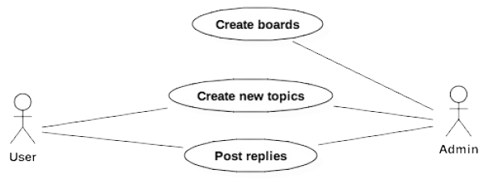
从上图，我们可以开始思考项目所需的实体类有哪些。这些实体就是我们要创建的模型，它与我们的 Django 应用程序处理的数据非常密切。
为了实现上面的用例，我们需要至少实现下面几个模型
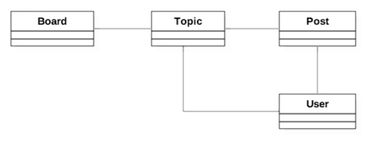
- Board 版块
- Topic 主题
- Post 帖子 主题的回复或评论
模型之间如何相互关联也很重要。类与类之间的实线告诉我们，在一个 Topic 中，我们需要有一个字段来确定它属于哪个 Board。同样，Post 也需要一个字段来表示它属于哪个主题，这样我们就可以列出在特定主题内创建的 Post。最后，我们需要一个字段来表示主题是谁发起的，帖子是谁发的。
Class Diagram 类图
用户和版块之间也有联系，谁创建的版块。但是这些信息与应用程序无关。还有其他方法可以跟踪这些信息，下图就是模型之间的关系图
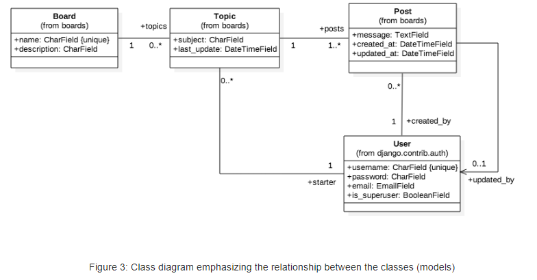
这个类图强调的是模型之间的关系，这些线条和箭头最终会在稍后转换为字段。
对于 Board 模型，我们将从两个字段开始：name 和 description。 name字段必须是唯⼀的，为了避免有重复的名称。description ⽤于说明这个版块是做什么⽤的。
Topic 模型包括四个字段：subject 表示主题内容，last_update ⽤来定义话题的排序，starter ⽤来识别谁发起的话题，board ⽤于指定它属于哪个版块。
Post 模型有⼀个 message 字段，⽤于存储回复的内容，created_at 在排序时候⽤（最先发表的帖⼦排最前⾯），updated_at 告诉⽤户是否更新了内容，同时，还需要有对应的 User 模型的引⽤，Post 由谁创建的和谁更新的。
最后是 User 模型。在类图中，我只提到了字段 username，password，email， is_superuser 标志，因为这⼏乎是我们现在要使⽤的所有东⻄。需要注意的是，我们不需要创建 User模型，因为Django已经在contrib包中内置了User模型，我们将直接拿来⽤。
关于类图之间的对应关系是一个重点，下图有进行详细的描述
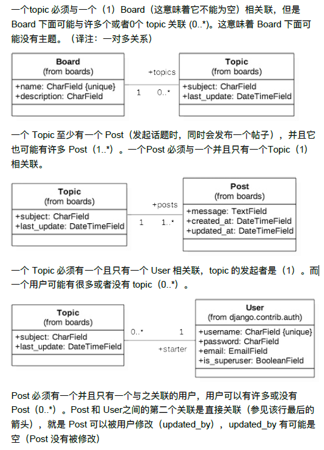
关系图虽然是已经很清晰的类图了，但是还有一种画类图的方法是强调字段而不是模型之间的关系
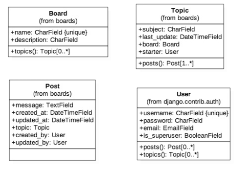
这种表示方法与前面的表示方式是对等的，不过这种方式更接近我们将要使用 Django Models API 设计的内容。在这种表示方式中，我们可以更清楚地看到，在 Post 模型中，关联了 Topic\created_by (创建者) 和 updated_by (更新者) 字段。另一个值得注意的事情是，在 Topic 模型中有一个名为 Posts() 的操作(一个类方法)。我们将通过反向关系来实现这一目标，Django 将自动在数据库中执行查询以返回特定主题的所有帖子列表。
Wirdframes 原型图
这一部分是作者希望通过画原型图的方式来更加清晰的了解需求
After spending some time designing the application models, I like to create some wireframes to define what needs to be done and also to have a clear picture of where we are going.
Then based on the wireframes we can gain a deeper understanding of the entities involved in the application.
首先，我们会有一个首页展示所有的模块
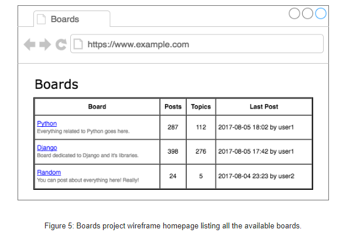
然后点击模块的按钮进入到某一个模块，会有两个功能
- 创建一个新的帖子
- 点击铁子链接进行查看或参与讨论
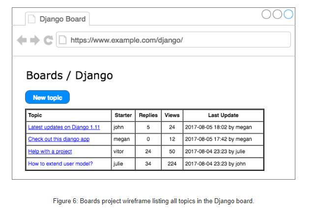
New Topic
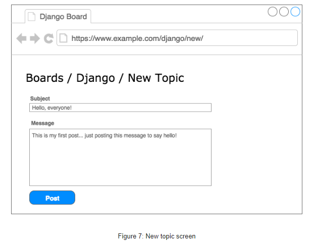
Reply
- 查看之前的回复
- 回复该主题帖子
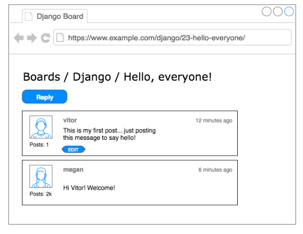
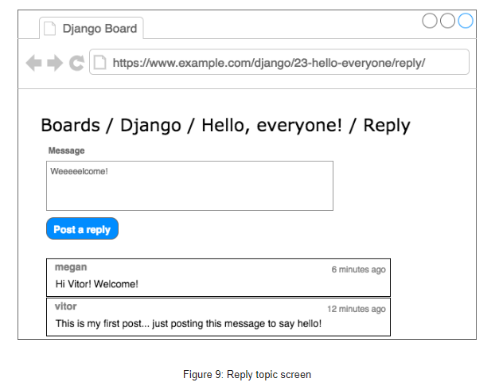
Models
模型设计即应用程序的数据库设计（在Django中是可以这样子表述的）。本节我们要做的是创建 Django 所代表的类，这些类就是在上一节中建模的类：Board，Topic和Post。User 模型被命名为内置应用叫做 auth,它以命名空间 django.contrib.auth 的形式出现在 INSTALLED_APPS 配置中,所以我们并不需要进行额外的模型搭建。
Django Settings
在构建 Models 之前，我们需要修改数据库的配置，将本项目和我们的 Mysql 数据库连接起来。这都是在 Project Name 文件夹下的 settings.py 文件中进行修改，同时我们也修改一些其他的配置内容。1
2
3
4
5
6
7
8
9
10
11
12
13
14
15
16
17
18myproject/settings.py
DATABASES = {
'default': {
'ENGINE': 'django.db.backends.mysql', #数据存储在mysql中
'NAME': "acbdg", # 数据库名为 acbdg
'USER':"root", # 账号
'PASSWORD':"password", # 密码
'HOST':"127.0.0.1" #默认地址
}
}
LANGUAGE_CODE = 'zh-hans' # 语言
TIME_ZONE = 'Asia/Shanghai' # 时区
# 跳转设置 无论从什么链接进入都会跳转到首页
LOGOUT_REDIRECT_URL = '/'
LOGIN_REDIRECT_URL = '/'
配置好数据库之后，我们首先进行一个数据的同步，看数据库的配置是否合适。
1 | (base) myproject>python manage.py makemigrations |
我们就可以在 Mysql 数据库中看到内置的一些 Models 表
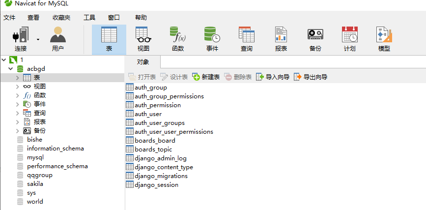
Django Models
以下是构建模型的代码
1 | boards/models.py |
我们需要在外键的参数中添加上 on_delete ，否则会报错topic = models.ForeignKey(Topic,related_name='posts') TypeError: __init__() missing 1 required positional argument: 'on_delete' 定义外键的时候需要加上 on_delete = models.CASCADE
原因： Django 升级到了 2.0 之后，表与表之间关联的时候，必须要写 on_delete 参数，否则会报错1
2
3
4
5
6
7
8
9
10
11on_delete=None, # 删除关联表中的数据时,当前表与其关联的field的行为
on_delete=models.CASCADE, # 删除关联数据,与之关联也删除
on_delete=models.DO_NOTHING, # 删除关联数据,什么也不做
on_delete=models.PROTECT, # 删除关联数据,引发错误ProtectedError
# models.ForeignKey('关联表', on_delete=models.SET_NULL, blank=True, null=True)
on_delete=models.SET_NULL, # 删除关联数据,与之关联的值设置为null（前提FK字段需要设置为可空,一对一同理）
# models.ForeignKey('关联表', on_delete=models.SET_DEFAULT, default='默认值')
on_delete=models.SET_DEFAULT, # 删除关联数据,与之关联的值设置为默认值（前提FK字段需要设置默认值,一对一同理）
on_delete=models.SET, # 删除关联数据,
a. 与之关联的值设置为指定值,设置：models.SET(值)
b. 与之关联的值设置为可执行对象的返回值,设置：models.SET(可执行对象)
由于 ManyToMantField 没有 on_delete 参数，所以以上只针对外键 ForeignKey 和 OneToOneField。
具体的 Models 的写法我都在注释中标注了，如果对于外键还是有理解误差的话可以看下图
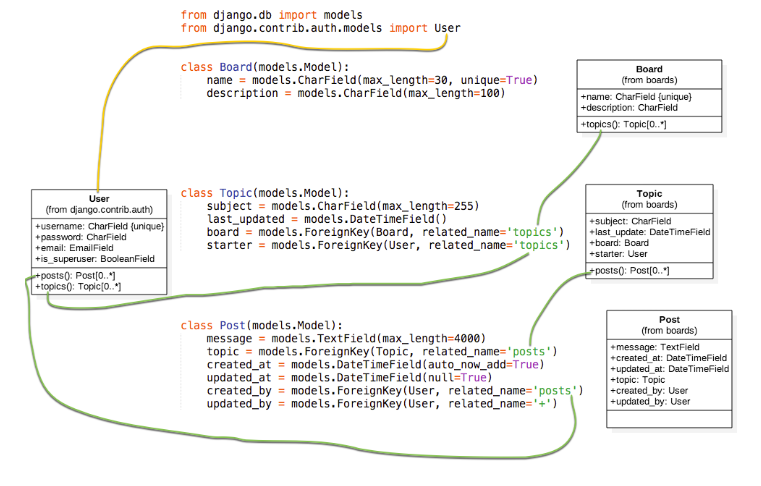
再次运行上面的迁移模型的代码1
2(base) myproject>python manage.py makemigrations
(base) myproject>python manage.py migrate
再次报错 Please select a fix: 1) Provide a one-off default now (will be set on all existing rows with a null value for this column)2) Quit, and let me add a default in models.py,报错的原因是因为我们之前已经使用了一次迁移模型，现在再进行该操作导致产生了冲突，将boards/migrations/0001_initial.py 删除掉在重新运行上述代码即可。
ForeignKey
最后我们来看下三个表的内容都有哪些，注意看外键的键值
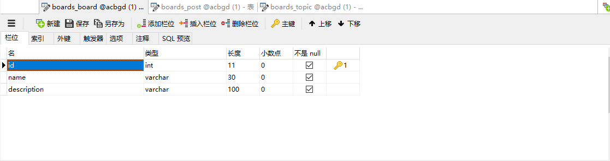
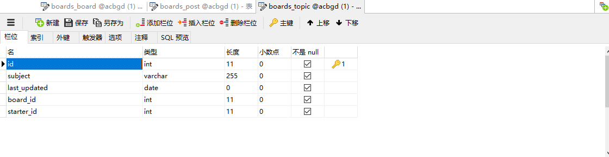
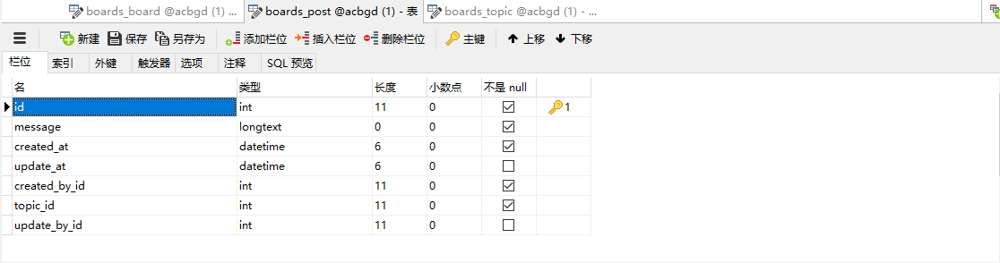
让我们在看看在代码中是如何引入的1
2board =models.ForeignKey(Board,related_name='topics',on_delete=models.CASCADE)
starter= models.ForeignKey(User,related_name='topics',on_delete=models.CASCADE)
为什么到了数据库中，存储的键变成了 board_id 和 starter_id ? 无需惊讶，这就是它应该有的样子。
那么 board 和 board_id 之间有什么关系呢？ 在 Python Shell 中我们查询 Board 得到对象，包含 board_id 在内的外键对应的对象，在 Django 中创建外键时，默认是以目标的主键作为对应项。
Models API
构建好了 Models 之后，我们可以使用 Python Shell 验证我们的 API 下面的代码涉及如下部分的内容
- 往表内插入数据
- 更新表内数据
- 读取表内数据
- 遍历 QuerySet 的所有数据
- 读取单个数据
| 操作 | 代码示例 |
|---|---|
| 创建一个对象而不保存 | board=Board() |
| 保存一个对象（创建或更新） | board.save() |
| 数据库中创建并保存一个对象 | Board.objects.create(name=’’,description=’’) |
| 列出所有对象 | Board.object.all() |
| 通过字段标识获取单个对象 | Board.objects.all() |
1 | # 进入 Python Shell 版块 |
在 In [13] 中我们只能看到两个对象，但显示的名称是 Board Project，这是因为我们尚未实现 Board 的 str 方法。当使用这个模块的该方法时，就会打印从这个方法中 return 的数据，当做对这个对象的描述。
1 | boards/models.py |
再次进入交互式控制台,可对比两者之间的区别
1 | (base) myproject>python manage.py shell |
Conclusions
- System design And Models 方面非常清晰的描述清楚了一对多的关系、并且用视图的方法更加直观的描述了各个 model 之间的关系,这在后续我们开发 Django 项目之前画一个类似的图能帮助我们更好的了解我们自己要构建的 Models。
- Wirdframes 通过原型图来了解需求是非常好的方法 如果我们在前面并不能很清晰的了解我们的需要构建的模型，在这一步也可以深入的去理解。
- Python Shell 通过 Python Shell 可以更快的了解 Models 的工作机制，因为我们在 Views 中写入的查询数据库数据的代码和在 Shell 中写的是一致的。
整篇文章是从需求方面出发，剖析 Models 的构建方法。甚至为了能够更好的理解外键，将原型图也拿出来了做展示。不管是 Class Diagram 还是 Wirdframes 都是非常好的理解 Models 的例子。然后是数据迁移、Python Shell 增删改查数据表中的数据。从根本上讲清楚了 Models 配置、调试、调用，确实是不可多得的好教程。